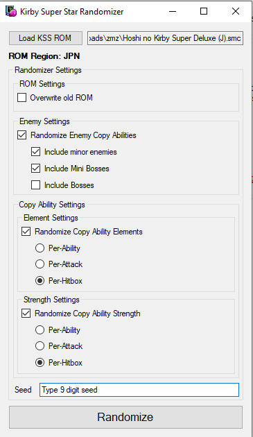

This is a work in progress. Let me know if anything is missing.
Rules/Guidelines:
- This is a randomizer, so no preplanned seeds, or any that you've seen or played before. If you restart a run, randomize the ROM again.
- Please share the seed. Unfortunately, the tool doesn't seem to tell you what your seed is if it is randomly generated by the application, so you must type in your own in order to know what it is. See image below for the required config for the randomizer.
- Standard RTA rules apply: no 2P controller, no L+R/U+D, no turbo buttons (mashing is allowed, of course), no reset (of any kind).
- All non-game-breaking glitches are allowed, including miniboss skips, miniboss quick kills, momentum conservation tricks, and the clips in Mallow Castle and Aqualiss (both of which I haven't bothered to learn, incidentally).
- RTA timing for 5 games/Any% starts from file select and ends on closing the Nova destruction cutscene right after Marx is defeated (for now, although that will probably change).
- No mixing. If you do accidentally trigger a mix, discard/use up the ability in a way that does not gain time.
- No copy essences/copy essence deluxe (except for the Copy ability in Milky Way Wishes, found on the ??? planet). If you touch a copy essence, discard the ability in a way that does not gain time. If you touch a copy essence deluxe, do not use that ability at all for the rest of the run.
- There are probably going to be restrictions on allowed emulators if this category has a future, but for now just make sure that your emulator is accurate and never runs above 100% speed, and don't use emulator tools like frame advance, turbo buttons, fast-forward/slowdown, scripting, save states, or rewind. I recommend snes9x, ZMZ, or BizHawk. For extra street cred, you can use a flash cart or an SD2SNES on original hardware.
- Subgame route: New file -> Spring Breeze -> Dyna Blade -> Revenge of Meta Knight -> Great Cave Offensive -> Milky Way Wishes
My personal route for the Milky Way Wishes subgame is as follows (this is also in the LiveSplit file below):
? (Copy ability) -> Skyhigh -> Hotbeat -> Mecheye -> Cavios -> Aqualiss -> Floria -> Halfmoon -> etc.
Config for randomizer (USE THIS):

Notes:
- Good movement abilities are Fire, Ice, Wing, Wheel, and Jet.
- Good battle abilities are Hammer, Plasma, Suplex, and some of the movement abilities, although attack strength is randomized, and sometimes the "ticks" or damage speed of the attacks can change.
- Bad abilities are Beam, Sword, and all temporary abilities (Sleep, Cook, Mike, Crash).
- Don't forget that you can "copy" Scarfies and Gordos. Maybe the ability you want is right there.
- If you use the Mike ability and it freezes one or more enemy sprites into ice cubes, the game will stay in the mike animation for several seconds. This is not a softlock.
- In one of my RTA attempts, the spawning of Iron Mam in the water chapter of Revenge of Meta Knight was very late. I have no video documentation of it, and I can't remember what exactly triggered it, but I think I might have used the Cook ability on the Poppy Bro Jr. right before the spawn trigger, which perhaps was not foreseen behavior by the developers. Again, this is not a softlock.
- The copy ability 'elements' usually will work in your favor, as it is often more likely to get useful elements from abilities where they would not normally be present. This holds true in the cannon room in Revenge of Meta Knight right before the Dyna Blade cutscene — you may think you're "stuck" there if you don't have hammer, fire, or jet with which to burn the cannon fuse; however, because the ability elements are randomized, you should be able to burn it eventually by going through all your attacks with your current ability, including Kirby's basic puff, slide, and fall attacks. If those don't work, you may attempt to mix a random ability from the two Burnin' Leos at the bottom of the room, and discard that ability just after Dyna Blade delivers Kirby to the Halberd (or earlier).
Useful links:
The file below contains an updated version of the LiveSplit subsplit configs that I used in the above video. It should also include my best segments from my most recent PB which clocked at 1:13:17, as streamed on Twitch (although network errors caused it do divide into two streams, which I don't want to have to deal with at the moment), but you can clear those and start fresh. "Marx" is the end of RTA timing (see rule #5).
Kirby Super Star randomizer - Any% [Sub].lss | Google Drive link